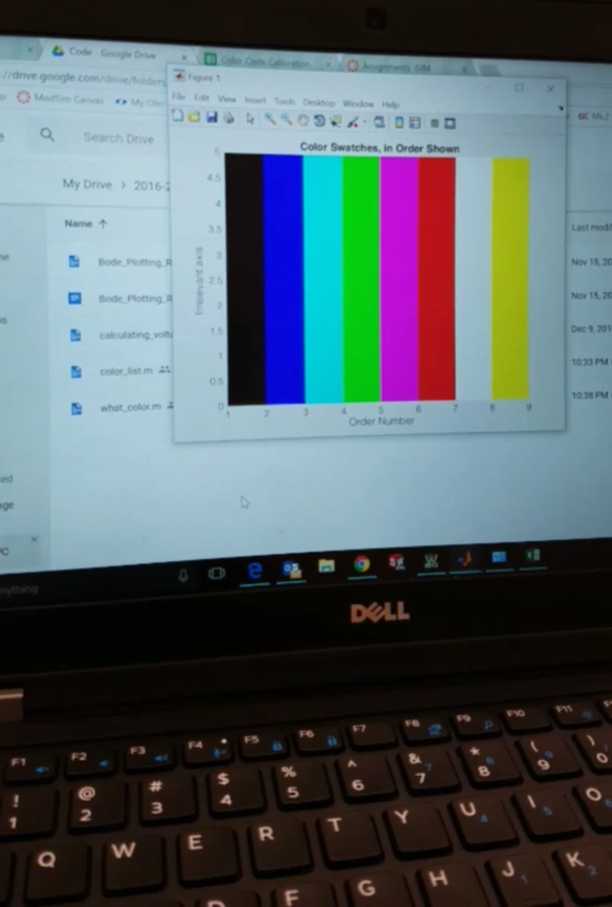
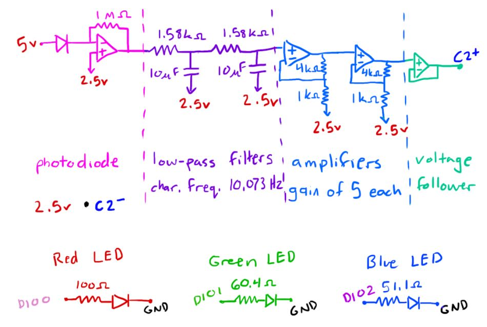

November-December 2016
ISIM
ISIM is Introduction to Sensors, Instrumentation, and Measurement, a first year class teaching the basics of electronics, wiring, and sensing. For our final project we were able to pick a challenge that would make use of many of the skills and concepts we had learned that semester. I worked with another student to create a color sensor. We would place a colored swatch on top of the circuit and a red, green, and blue light would flash. A sensor would record the intensity of light reflected in order to determine what color the swatch had been. We were able to create a program that took the raw sensor reading data and filtered it to predict what RGB value the given swatch would have had, and with that predicting the specific color.
Originally we wanted to be able to sense any color of an object and create a graphical output of that color. However, after a week of testing our circuit we reevaluated and decided to stick to several pre-determined swatches of color. By the end we were able to place the swatches on the sensor in a random order and have the program output a series of colored bars indicating the order in which the colors appeared. For the project I worked a lot on the calibration of the data and translating the raw data into RGB approximations. I also designed and 3D printed the housing which blocked out external light sources and allowed for the sensor to read the reflection of the RGB lights off of the swatch and not the light of the LEDs themselves.
 